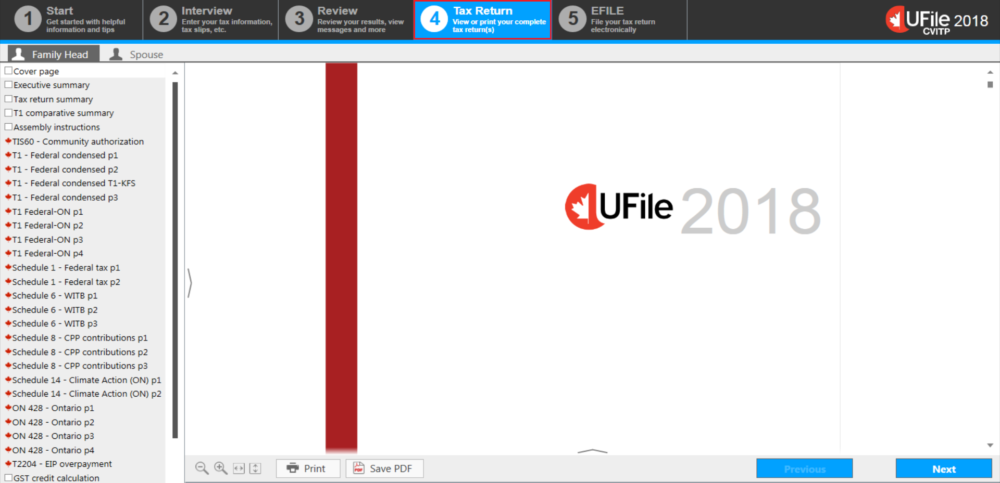
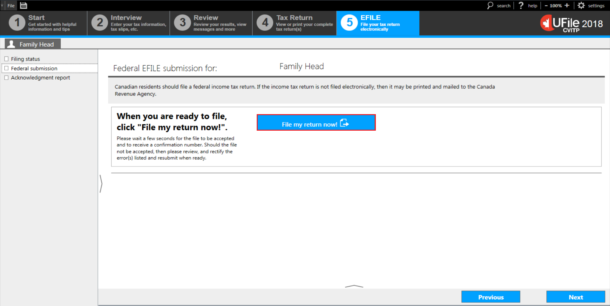
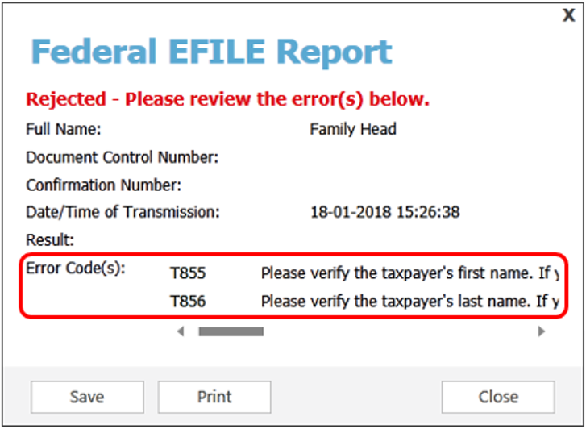
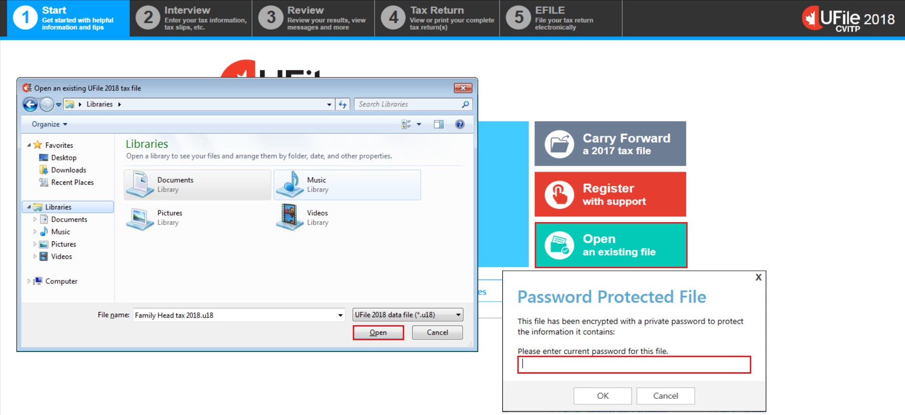

How to review and send the return
On this page
- Controls – MaxBack
- Review of results and calculations
- Finalizing the tax return
- EFILING the return
- Providing the tax return and forms
- Saving a tax return
- Opening a saved tax return
Controls - MaxBack

Text version
UFile screen
Under Interview tab
Family Head sub-tab
Controls topic is highlighted
On this screen
MaxBack controls examine your entries for possible credits, deductions, or transferable amounts. This allows UFile to consider all opportunities to lower the individual’s tax payable and maximize their refund. The options you select on this screen will determine how MaxBack will work. You are not required to make any changes to the settings on this page.
MaxBack will automatically make decisions that are beneficial to the individual or family and checks that the data is accurate and complete. It also provides easy-to-understand warnings and notes for possible discrepancies or tax savings that may have been missed.
All applicable tax rules are built into the software.
Review of results and calculations

Text version
UFile screen
Under Review tab
Family Head sub-tab
Calculation Finished page is highlighted
Summary, Messages, Federal, and Tax saving ideas topics are highlighted
Tax calculations completed successfully is highlighted
On this page
The Review tab, found on the top menu bar, allows you to review a summary of the information entered.
On the Calculation Finished page, UFile will display the family’s total result, followed by a breakdown of each family member’s individual results.
The left-side menu will display a number of options:
- Summary (the screen shown now) will display either the total refund (highlighted in green) or the total amount owed (highlighted in orange)
- Messages will display Errors, Warnings, and Tips (these options are also found at the bottom of every screen)
- Federal will display a summary of the income tax return
- Clicking on a line number of the tax return will open the UFile help window and provide you with more details
- Tax saving ideas will display tax advice tailored to the individual’s situation
If errors are detected, a balance will not be calculated and an error message will appear.
Review the Messages section for more details. Review any errors identified and select Click here to fix. You will be automatically redirected to the page in the Interview section where you can make the necessary corrections.
Finalizing the tax return
Text version
UFile screen
Tax Return tab is highlighted
Family Head sub-tab
Pages specific to the tax return are displayed in the left-side menu
On this screen
Select the Tax Return tab to generate the complete tax return, including all of the required schedules and forms, if applicable. You can view any of the pages by either scrolling down the main page or selecting a specific page from the left-side menu.
UFile software will automatically generate all applicable schedules and forms, including form TIS60, Taxpayer Authorization, which can be printed. For more information on how to print, refer to Providing the tax return and forms.
Tip
To review the tax returns generated for other family members, you must select the profile tab for the individual whose tax return you would like to view, then click the Tax Return tab.
EFILING the return

Text version
UFile screen
EFILE tab is highlighted
Family Head sub-tab
Filing status topic
Filing status for: Family Head page
Ready for filing link is highlighted
On this screen
To successfully transmit a tax return using EFILE, follow the steps in the software.
After you click on the EFILE tab in the top menu bar, the screen Filing status for Family Head will appear.
The filing status is displayed to the right of the individual’s name.
If the filing status is Ready for filing, click on the link or select Next.
Text version
UFile screen
Under EFILE tab
Family Head sub-tab
Federal submission topic
Federal EFILE submission for: Family Head page
File my return now! button is highlighted
On this screen
If you are ready to file the tax return, on the Federal submission screen, click File my return now!
Once you click File my return now!, UFile will connect directly to the CRA and transmit the tax return.
Tip
Transmission may take a few minutes, as an initial review is conducted on each tax return transmitted.
Text version
Federal EFILE Report window
Document Control Number: TG XXXX-XXXXXX is highlighted
On this screen
Once the review is completed, a Federal EFILE Report will be displayed, providing you with a Document Control Number.
If a tax return passes the error detection in the EFILE system, an Accepted message will appear in green, a Confirmation Number will be generated, and code 180 or 182 will be displayed along with an explanation that the tax return has been received by the CRA.
Text version
Federal EFILE Report window
Rejected – Please review the error(s) below – message in red font colour
Error Code(s) section is highlighted
On this screen
If there are issues that prevent the transmission and the tax return was not accepted by the CRA, you will see the message Rejected – Please review the error(s) below in red at the top of the Federal EFILE report.
Depending on the reason for the rejected transmission, an explanation may show in either the Result or Error Code(s) section indicating which fields have to be corrected.
An EFILE transmission can be rejected multiple times with different error codes.
For more information on EFILE error codes, refer to the EFILE section of this web site.
Providing the tax return and forms
The CRA encourages electronic filing; however, it also recognizes that you may need to provide specific pages or a copy of the tax return to an individual. You can either save them as a PDF or print them for the individual.

Text version
UFile screen
Under Tax Return tab
Save PDF button is highlighted
Save tax return as PDF pop-up window is displayed
Enter the file path and name of the PDF file you wish to create is highlighted
Ellipsis (…) button is highlighted
Open this file in a PDF reader when created is unchecked and highlighted
Protect the file with a password is checked and highlighted
Save to PDF button is highlighted
On this screen
To save specific pages or a copy of the tax return as a PDF:
- click Save PDF button at the bottom of the Tax Return page
- a pop-up window, Save tax return as PDF, will appear
- enter the file path and the name of the PDF file you wish to create
- unselect the box Open this file in a PDF reader when created
- select the box Protect the file with a password
- select either, All pages (including diagnostics), Federal tax return only, or Selected pages, depending on what you need to provide to the individual
- click Save to PDF

Text version
Enter password for PDF pop-up window is displayed
On this screen
The pop-up window, Enter password for PDF, will appear.
- enter the password you and the individual decided on in both fields
- click OK
Text version
UFile screen
Under Tax Return tab
Family Head sub-tab
Cover page topic
Print button is highlighted
Print tax return pop-up window is displayed
Federal tax return only option is highlighted
Selected pages option is checked and highlighted
On this screen
To print the specific pages or copy of a tax return:
- select the Print button at the bottom of the Tax Return page
- a pop-up window, Print tax return, will appear
- select either, All pages (including diagnostics), Federal tax return only or Selected pages, depending on what you need to print for the individual
When All pages or Federal tax return only is selected, there is no further action required. Simply click on Start printing.
When Selected pages is chosen, you can select individual forms, schedules and other pages, by holding down the Ctrl or Shift key on your keyboard and using your mouse to click on the pages you wish to print. Once you have selected all of the pages you require, click on Start printing.
Tip
To minimize the number of pages you are printing, you can choose Federal tax return only or Selected pages rather than All pages.
If you are printing the tax return to send to the CRA for processing, choose Federal tax return only which will include only the main pages of the tax return.
Saving a tax return

Text version
UFile screen
Tax Return tab
File button is highlighted
A personal computer screen is displayed on the left
Save button is highlighted
Under Password Protected File pop-up window
Set user password button is highlighted
On this screen
UFile CVITP software has enforced password protection to encrypt information when saved. When you use Save as to save a file Save as, a pop-up window will appear. Select the location where the file will be saved (should always be on a USB flash drive, never on a hard drive). If the default location is not correct, click the file-folder icon and select the location that you will save the tax return to and click Save.
Once you have encrypted and saved the tax return, a Password Protect File pop-up window will open. It is recommended that you use the same password for all of the tax returns you complete. Once you have entered a password, click Set user password.
You do not have to save the tax return in order to print it, or to transmit it using EFILE. This step is only necessary in instances where you are unable to transmit a return immediately upon completion. For more information, see the important note under Transmitting the return.
Opening a saved tax return
Text version
UFile screen
Start tab
Open an existing file is highlighted
Under Password Protected File pop-up window
Please enter current password for this file is highlighted
A personal computer screen is displayed on the left
Open button is highlighted
On this screen
To open a file that you have previously encrypted and saved, click Open an existing file on the start screen.
A pop-up window will ask you to find the location of the file that you want to open. Click the folder icon to select the location. Then click Open.
A new pop-up window will ask for the password to the encryption. Enter the password, click OK, and the file will open.
Getting help with UFile
Go to UFile CVITP to get answers to frequently asked questions and other helpful information for volunteers.
If you have an error message with no suggested fix, try the following:
- Go to the UFile Forums page and copy the error message into the search bar
- Go to the UFile virtual support agent page and request assistance
- Call the dedicated help line for volunteers at 1-866-398-3488